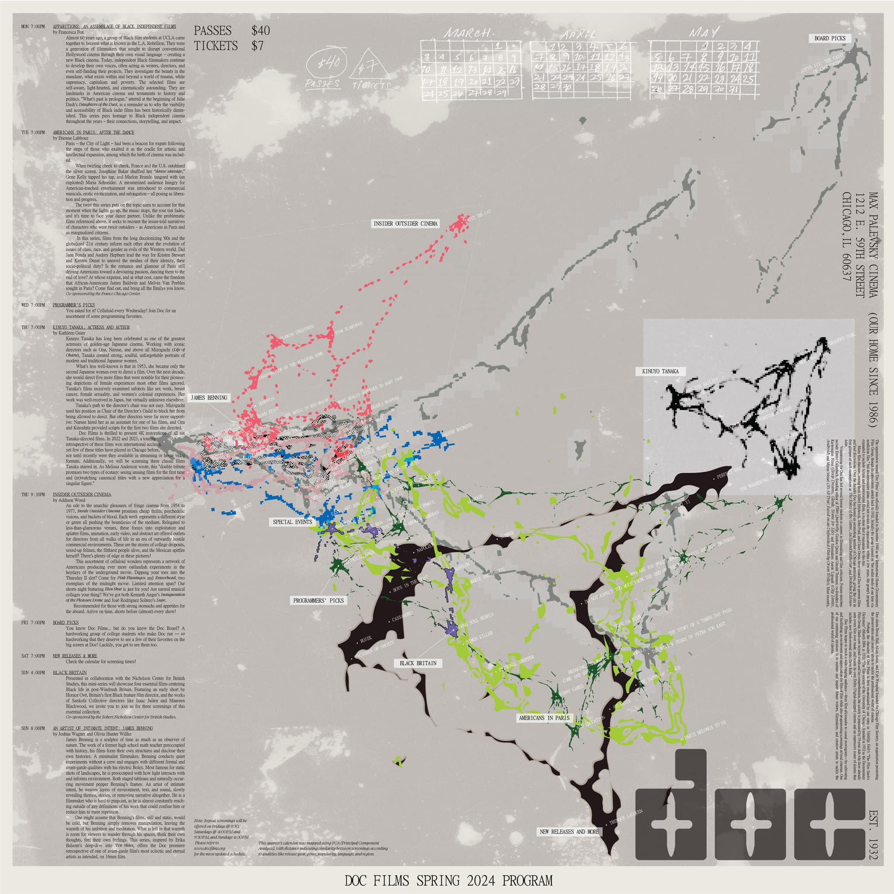

ELI HARRELL
Metadata Map
a computer ~ 2D project
I used principal component analysis (PCA) to create an unorthodox way of representing the relationship between films in
a single season of programming at student-run cinema Doc Films, in collaboration with designer
Ines Kang. The polemic of this design
rests on an unexpected inversion of geometry: algorithmic recommendation appears
(quasi-)organic while human curation appears rectilinear, as seen in Doc Films'
traditional programs.
PCA is a rudimentary version of the same kind of techniques used by content platforms to create user feeds.
click images to view them at full size.
| Calendar displayed on a busy campus bulletin board. | |
|
Instead of showing the conventional column of programmer-selected films on each corresponding day of the week,
this technique spatializes the screenings based on their
TMDB metadata:
release year, language, user popularity, and genres.
|
 |
| Output from minimal path algorithm run on the output of the PCA process (film-pca.py), which placed each film's dot nearest to the other films which resemble it in the database (same language, similar popularity, etc.). | |
| To build a clean dataset (.csv), I created an interactive Python search function (.py) to extract the correct metadata from the TMDB API based on the film's title. |

|